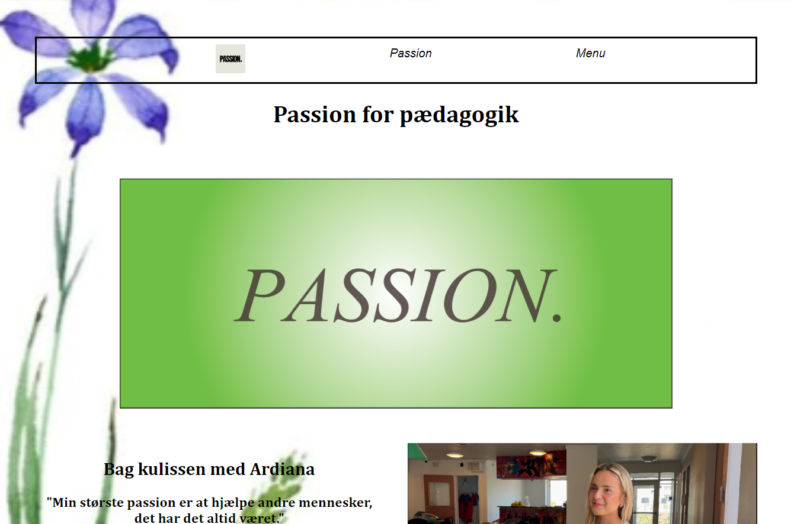

Tema 5 - Grundlæggende indhold: Passionsite
Tema beskrivelse
I denne opgave skulle vi både arbejde i grupper for første gang med også individuelt. Opgaven gik ud på at vi to og to skulle vælge en person med en passion, og lave en video om vedkommende. Videoen skulle være et interview på et minut, hvor vi skulle implementere ‘b-rolls”. Videoen og lyd skulle redigeres i Premiere Pro. Sitet skulle kodes ud fra udleverede wireframes - både mobil og desktop. Vi blev i denne opgave også præsenteret for Lottiefiles som vi skulle lave i Adobe After Effects.
Konklusion på tema
I dette tema skulle vi i gruppen filme en passionsvideo og derefter individuelt kode et site og klippe den video, som skulle indgå på sitet. Med dette lærte vi om hele produktionsprocessen med at lave video. Inden optagelserne skulle vi i fællesskab lave et storyboard og til selve optagelserne brugte vi kamerastativ og mikrofoner for at opnå bedst mulig lyd. I vores proces med at lave Lottiefiles, kunne vi bruge den erfaring vi havde fået med Adobe Illustrator med at kreere og eksportere vores arbejde fra forrige tema.